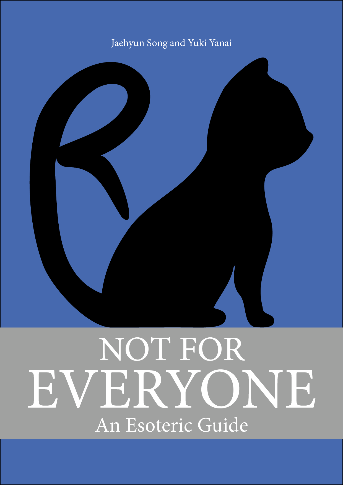
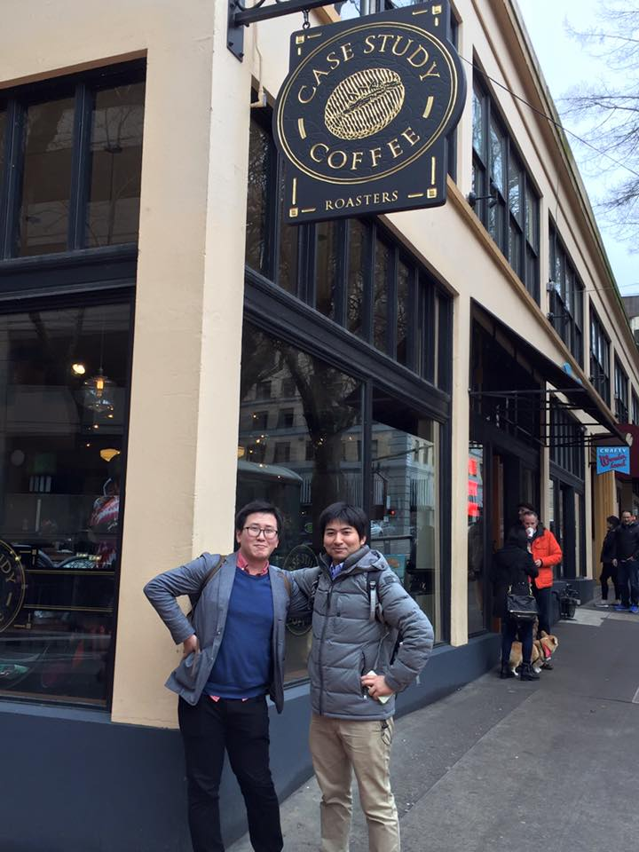

私たちのR
ベストプラクティスの探求
紹介

『私たちのR』は宋財泫（SONG Jaehyun）と 矢内勇生が共同で執筆するRプログラミングの「入門書」である。統計学の本ではない。
また、本書はデータ分析の手法の解説書でもない。Rを用いたデータ分析については他の本を参照されたい。私たちが専門とする政治学におけるデータ分析については、以下の本を勧める。
- 浅野正彦, 矢内勇生. 2018. 『Rによる計量政治学』オーム社.
- 飯田健. 2013.『計量政治分析』共立出版.
- 今井耕介（粕谷裕子, 原田勝孝, 久保浩樹 訳）2018.『社会科学のためのデータ分析入門（上）（下）』岩波書店.
本書が想定するのは、次のような希望をもつ読者である。
- 分析に入るまでの段階、つまりデータの入手やクリーニング方法が知りたい
- 分析結果を自分の思いどおりに可視化したい
- 複数のモデルを効率的に分析したい
- Rでシミュレーションがしたい
- Rと友達になりたい
本書を読んでも統計学やデータ分析を理解することはできない。本書の目的は、統計学やデータ分析についての知識を持った方々と、Rを使ってもっと効率的にデータ分析をする方法を共有することである。また、統計学やデータ分析を勉強する際に、プログラミングについての副読本として読むことも想定している。
本書を読み終える頃には、Rなしでは生活できなくなっていることだろう。
本書の執筆環境については本書の最後を参照されたい。
著者紹介

宋財泫（そん じぇひょん[SONG Jaehyun]; 写真左）はR黒帯の大学教員。宗ではなく、宋。猫好き。 主な著書：真に驚くべき業績を残しているが、この余白はそれを書くには狭すぎる。 公開したRパッケージ: BalanceR, PRcalc, SimpleConjoint, woRdleなど
- 関西大学 総合情報学部 准教授
- Email: song@kansai-u.ac.jp
- Webpage: https://www.jaysong.net
- Twitter: @Tintstyle
- GitHub: https://github.com/JaehyunSong
矢内勇生（やない ゆうき; 写真右）はR歴15年の大学教員。猛猫。主な著書：『Rによる計量政治学』（共著, オーム社, 2018年）, 『政治経済学』（共著, 有斐閣, 2020年） 公開したRパッケージ：rgamer
- 高知工科大学 経済・マネジメント学群 准教授
- Email: yanai.yuki@kochi-tech.ac.jp
- Webpage: https://yukiyanai.github.io
- Twitter: @yuki871
- GitHub: https://github.com/yukiyanai
本書における表記法
- コードは以下のように背景に色が付けられている部分である。
- コードの中で
#で始まる内容はコメントであり、分析に影響を与えない。ただし、"や'で囲まれた#はコメントではない。また、行の途中から#が入る場合、#以降は実行されない。
- コードの右端に表示される丸付き数字（、など）は各行の解説を意味する。数字部分にマウスのカーソルを乗せると解説が表示される。
- 1
-
dfからID列、Col1からCol3列、Col8列を抽出する。 - 2
-
IDの値が100以下の行を抽出する。
- 出力結果は灰色の枠線で囲まれた領域である。
[1] "Hello!"オブジェクト名は
変数名や関数名()のように文中の色付き背景で示された部分である。パッケージ名は{}で囲む。tidyverseパッケージの場合、{tidyverse}と表記する1。
データのダウンロード
本書のデータは付録の「データセット」から入手可能である。
著作権
本著作物は クリエイティブ・コモンズ 表示-非営利-改変禁止 4.0国際ライセンスの下に提供されています。
目次
章立ては未定。著者が書きたいものから書く予定 (全部で30~35章くらいになる見込み)。
- 第1部: Rの導入
- 第2部: Rの基礎
- 第3部: データハンドリング
- 第4部: 可視化
- 第5部: 再現可能な研究
- 第6部: 中級者向け
- 付録
今後の『私たちのR』
- R MarkdownとQuartoの内容は統合される予定です。
- 3章構成を考えてます。
- 基礎編
- Markdownの基本文法
- Chunkについてもここで説明
- 余裕があれば、R Markdownについても少し紹介
- 応用編
- より高度な使い方
- よく使うYAMLヘッダーの設定
- 日本語PDF
- 発展編
- スライド（revealJS）など
- 基礎編
- 3章構成を考えてます。
- 「文字列の処理」の完成
- もしかしたら時系列データの処理方法も紹介するかも
- 別途の章でなく、「データ型」で紹介する程度になるかも
ただし、パッケージ名を{}で囲むのは一般的な表記ではないことを断っておきたい。↩︎